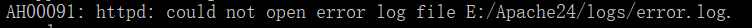

apache部分报错解决方法

来自之前cnblog的博客
源地址：https://www.cnblogs.com/This-is-Y/p/11251421.html
AH00558：
进入apache文件夹下的conf文件夹，打开httpd.conf文件，用ctrl+F找到ServerName，如下图
在下面加上一句：
ServerName domain_name:80
或
ServerName localhost:80
如图：
之后启动apache服务，httpd -k start
AH00451：
原因：由于安装了虚拟机VMWare，被占用443端口
解决方法：
打开虚拟机VMware，打开菜单 编辑→首选项（Edit–> Preferences）
点击共享虚拟机后，找到右边的更改设置，点击它
在端口号处，输入444，点击确定，等待一会，大功告成
如图
** AH00091：**

AH00015：
这两个放一起解决，如果端口没问题的话，那就用管理员打开cmd，执行httpd -k start
暂时写到这里，我出现的问题就这么多，后续再更新
评论